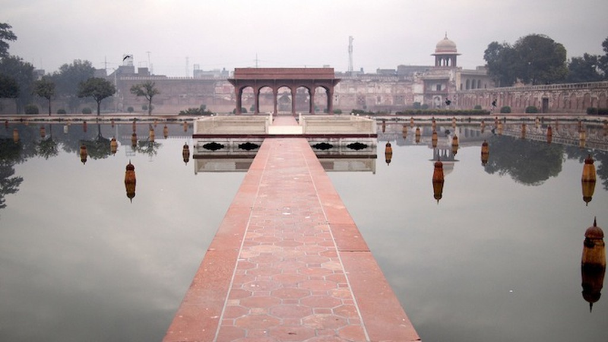
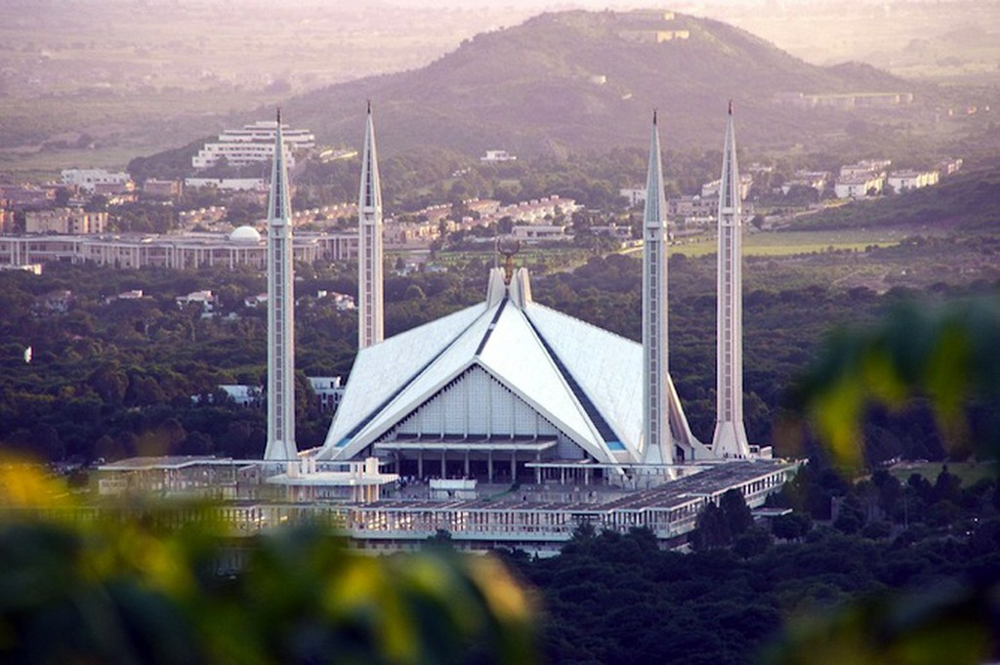
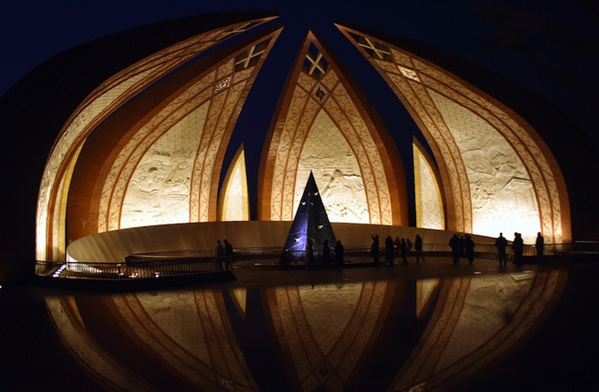
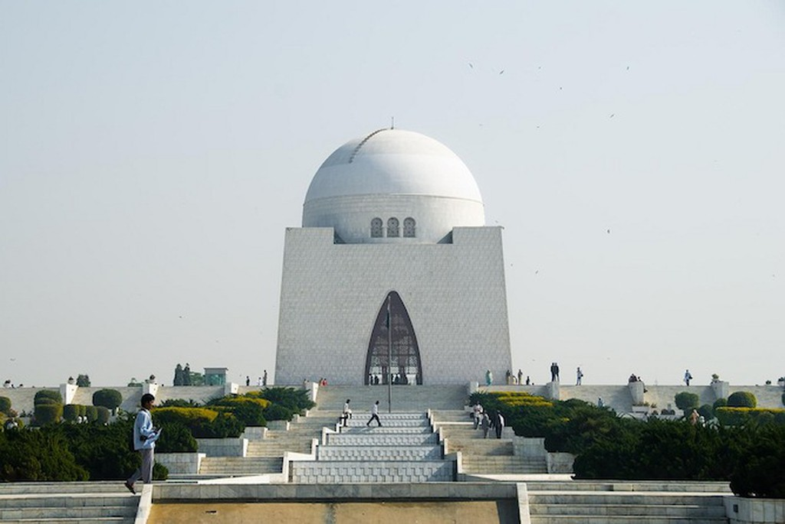

 Completed in 1641, the Shalimar Gardens were the possession of a noble, Pakistani family, a governance not difficult to guess at all, considering the magnificence of this beautiful site. The gardens are laid out over three descending, successive terraces carrying the poetic names of Bestower of Pleasure, Bestower of Goodness and Bestower of Life, each rising four to five meters above the other. Despite the ravishing flowers and lush fruit trees, the flora isn’t the best attraction of these gardens, as the misleading name might suggest. In fact, most striking are the large pools placed in the middle of the terraces, which receive water from hundreds of fountains (410 in total across the three terraces). The quaint pavilions, porticoed audience halls and marble basins found along the edges of the pools complete a peaceful, dream-like and refreshing corner in the city of Lahore.
Shalimar Gardens, G. T. Rd, Lahore, Pakistan
 When Turkish architect Vedat Dalokay‘s design was chosen for the Faisal Mosque, many raised their eyebrows. The project differed from traditional mosque architecture, as it featured contemporary, sleek lines and, most notably, lacked a dome. Construction work began in 1976 and was finally completed ten years later. By then, most criticism had crumbled in front of the imposing, captivating building that now dominates Islamabad, Pakistan’s capital city, from its elevated position at the foot of the Margalla Hills. The mosque is named after Faisal bin Abdul-Aziz, the Saudi king who suggested the idea of a national Pakistani mosque, and largely financed its construction. The 5,000-square-meter prayer hall is an eight-sided, concrete structure, inspired by the traditional tents of Bedouins, with a capacity for 100,000 worshippers. It’s surrounded by four 88-metre-high minarets in perfect one-to-one ratio with the base. They were designed as the sides of an imaginary cube, in honor of the sacred, cubic Kaaba found at the centre of Mecca’s most important mosque.
Faisal Mosque, Faisal Avenue, Islamabad, Pakistan
 The Pakistan Monument was inaugurated in Islamabad on 23 March 2007 as a national monument embodying the country’s history, and is in effect rich with significant cultural references. For its design, architect Arif Masood drew inspiration from the figure of a blossoming flower to represent the four provinces and three territories into which Pakistan is subdivided. The structure consists of four bigger ‘petals’ (the provinces), alternated with three smaller ones (the territories), built in granite and decorated with murals on the inner sides. Seen from above, the monument meaningfully recalls the five-pointed star on Pakistan’s national flag. Below the petals, a metallic crescent is found, which is inscribed with verses by Pakistan’s founder Muhammad Ali Jinnah and Indian poet Muhammad Iqbal.
Shakar Parian National Park, Islamabad, Pakistan
 Widely revered as the Great Leader or Father of the Nation throughout Pakistan, Muhammad Ali Jinnah was a pivotal figure in leading the country to independence from the British Empire. A beautiful mausoleum in Karachi, Pakistan’s largest city and Jinnah’s hometown, celebrates his memory and is home to his tomb, as well as those of his sister and Pakistan’s first prime minister. The mausoleum’s bold design impresses with its striking yet iconic simplicity: a nearly cubic base, with an extension of 75 square meters, topped by a large dome, both clad with splendid white marble. The sanctum can be entered on any of the four entrances, one on every wall, and each situated under an eye-catching Moorish arch. Jinnah’s tomb lies on an elevated platform rising in the middle of the stunning surrounding park, with beautiful moans and a set of 15 successive fountains that lead the eye towards the mausoleum.
Mazar-e-Quaid, Jacob Lines, Karachi, Pakistan